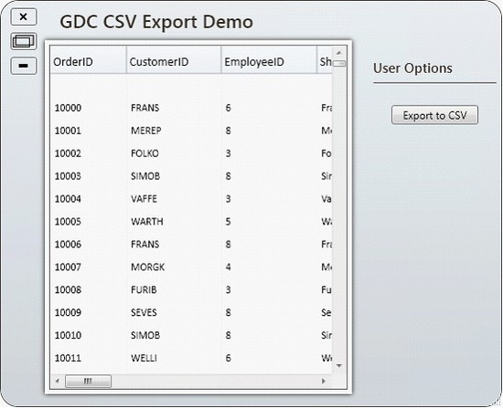
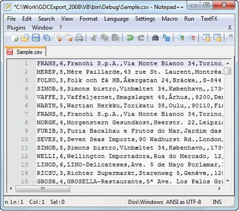

The ExportToCSV method of the GridModelExportExtensions class enables GridDataControl to easily be exported to CSV format.
To enable exporting, the following .dll files must be added along with the default .dll files in the reference folder:
· Syncfusion.XlsIO.Base
· Syncfusion.XlsIO.WPF
· Syncfusion.GridConverter.Wpf
Converting GridDataControl to CSV format
You can convert the entire content of a grid control to a CSV file by using the following code:
|
[C#]
this.gdc.Model.ExportToCSV("Sample.csv") |
|
[VB]
Me.gdc.Model.ExportToCSV("Sample.csv") |
When the code runs, the following output displays.

Figure 242: GridDataControl Ready for Export
When you are ready to export the entire grid, click Export to CSV; the grid content will then be converted to CSV format.

Figure 243: Exported Grid Content in CSV Format